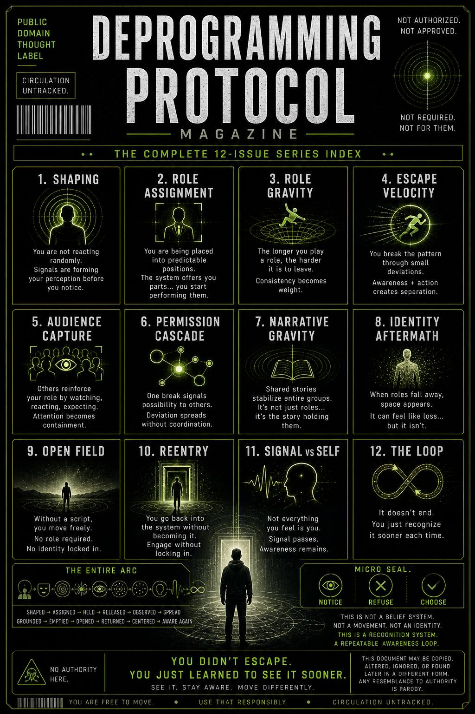

1. SHAPING
You are not reacting randomly.
Signals are forming your perception before you notice.
2. ROLE ASSIGNMENT
You are being placed into predictable positions.
The system offers you parts… you start performing them.
3. ROLE GRAVITY
The longer you play a role, the harder it is to leave.
Consistency becomes weight.
4. ESCAPE VELOCITY
You break the pattern through small deviations.
Awareness + action creates separation.
5. AUDIENCE CAPTURE
Others reinforce your role by watching, reacting, expecting.
Attention becomes containment.
6. PERMISSION CASCADE
One break signals possibility to others.
Deviation spreads without coordination.
7. NARRATIVE GRAVITY
Shared stories stabilize entire groups.
It’s not just roles… it’s the story holding them.
8. IDENTITY AFTERMATH
When roles fall away, space appears.
It can feel like loss… but it isn’t.
9. OPEN FIELD
Without a script, you move freely.
No role required. No identity locked in.
10. REENTRY
You go back into the system without becoming it.
Engage without locking in.
11. SIGNAL vs SELF
Not everything you feel is you.
Signal passes. Awareness remains.
12. THE LOOP
It doesn’t end.
You just recognize it sooner each time.
You are shaped → assigned → held → released → observed → spread → grounded → emptied → opened → returned → centered → aware again.
Not a belief system.
Not a movement.
Not an identity.
👉 A recognition system
👉 A repeatable awareness loop
👉 A field manual for seeing while it’s happening